Ingeniería en Tecnologías de la Información e Innovación Digital
BASE DE DATOS EN LA NUBE
Práctica de laboratorio
Alexis Ian Neocelo Sanabria
Javier Nolasco Hernández
25 de septiembre de 2026
Contenido de la práctica
Descripción general y propósito de la práctica.
Conceptos relacionados con usuarios, roles, privilegios y seguridad en PostgreSQL.
Creación de usuarios, asignación de privilegios y comprobación de los permisos otorgados.
Resultados obtenidos y conocimientos adquiridos durante la práctica.
Fuentes utilizadas para fundamentar los conceptos desarrollados en la práctica.
Administración de usuarios y privilegios en PostgreSQL
La administración de usuarios y privilegios es un aspecto importante dentro de un sistema de bases de datos, ya que permite controlar las acciones que cada usuario puede realizar sobre la información almacenada. Mediante la asignación de permisos es posible establecer diferentes niveles de acceso y evitar que un usuario ejecute operaciones que no corresponden con sus responsabilidades.
En esta práctica se utilizó una base de datos PostgreSQL alojada en Neon para trabajar con la creación y administración de usuarios. Inicialmente se accedió a la base de datos neondb mediante el usuario propietario y se crearon tres usuarios llamados pedro, juan y pablo. Posteriormente, se asignaron privilegios diferentes a cada uno de acuerdo con los requerimientos establecidos en la actividad.
Al usuario pedro se le otorgaron permisos de lectura sobre las tablas de la base de datos. Al usuario juan se le concedieron privilegios para realizar operaciones de escritura sobre la tabla alumno, mientras que al usuario pablo se le proporcionaron permisos de escritura sobre la tabla asistencia. También se configuraron los permisos necesarios sobre el esquema y las secuencias utilizadas por las tablas.
Finalmente, se realizaron conexiones independientes con cada usuario para comprobar el funcionamiento de los privilegios asignados. Se ejecutaron operaciones permitidas y operaciones no autorizadas, observando la respuesta de PostgreSQL en cada caso. De esta manera fue posible comprobar que los permisos establecidos limitan las acciones de cada usuario de acuerdo con el nivel de acceso que le fue otorgado.
Usuarios, roles y control de privilegios en PostgreSQL
PostgreSQL administra los permisos de acceso mediante roles. Un rol puede representar a un usuario de la base de datos o funcionar como un grupo, dependiendo de su configuración. Además, los roles pueden ser propietarios de objetos y recibir privilegios para determinar las operaciones que pueden realizar sobre ellos (PostgreSQL Global Development Group, 2026).
En esta práctica se crearon los usuarios pedro, juan y pablo, cada uno con permisos diferentes de acuerdo con las operaciones que debía realizar dentro de la base de datos.
Los privilegios determinan las operaciones que un rol puede realizar sobre los objetos de una base de datos. PostgreSQL dispone de privilegios como SELECT, INSERT, UPDATE, DELETE, CREATE y USAGE, entre otros. Los permisos aplicables dependen del tipo de objeto sobre el cual se asignan (PostgreSQL Global Development Group, 2026).
En la práctica, el privilegio SELECT fue utilizado para permitir que pedro realizara operaciones de lectura, mientras que los privilegios INSERT, UPDATE y DELETE fueron asignados a juan y pablo sobre tablas específicas.
GRANT es la instrucción utilizada en PostgreSQL para conceder privilegios sobre objetos de la base de datos a uno o varios roles. Los permisos otorgados pueden aplicarse, entre otros objetos, a tablas, secuencias, bases de datos y esquemas (PostgreSQL Global Development Group, 2026).
Mediante este comando se otorgó a pedro el permiso SELECT sobre las tablas existentes, a juan los permisos de escritura sobre la tabla alumno y a pablo los permisos correspondientes sobre la tabla asistencia.
Los esquemas permiten organizar los objetos contenidos en una base de datos. Para utilizar objetos pertenecientes a un esquema, PostgreSQL contempla el privilegio USAGE, además de los permisos específicos que sean necesarios sobre cada objeto (PostgreSQL Global Development Group, 2026).
Durante la práctica se trabajó con el esquema public y se concedió el privilegio USAGE a los usuarios creados para que pudieran utilizar los objetos sobre los cuales posteriormente recibieron permisos específicos.
Las secuencias son objetos de PostgreSQL utilizados para generar valores numéricos consecutivos. PostgreSQL permite asignar sobre ellas privilegios como USAGE, SELECT y UPDATE (PostgreSQL Global Development Group, 2026).
En esta práctica fue necesario considerar las secuencias utilizadas por las columnas de identificación de las tablas. Por esta razón se otorgaron permisos sobre las secuencias a los usuarios que debían realizar inserciones.
La asignación individual de privilegios permite limitar las operaciones disponibles para cada usuario. En lugar de conceder acceso completo a todos los objetos, se pueden otorgar únicamente los permisos necesarios para realizar determinadas actividades.
Este enfoque fue aplicado durante la práctica al separar las responsabilidades de los usuarios: pedro recibió acceso de lectura, juan permisos de escritura sobre alumno y pablo permisos de escritura sobre asistencia. Posteriormente, las restricciones fueron comprobadas intentando ejecutar operaciones autorizadas y no autorizadas.
Creación de usuarios, asignación de privilegios y comprobación de permisos
Para comenzar la práctica se abrió el símbolo del sistema de Windows (CMD) y se realizó una conexión con la base de datos PostgreSQL alojada en Neon. La conexión inicial se efectuó utilizando el usuario propietario de la base de datos, debido a que este cuenta con los privilegios necesarios para crear nuevos usuarios y posteriormente asignarles permisos.
Para establecer la conexión se utilizó el cliente psql junto con la cadena de conexión proporcionada por Neon. Por motivos de seguridad, la contraseña utilizada para acceder a la base de datos no se muestra en esta documentación.
psql "TU_CADENA_DE_CONEXION_DE_NEON"
Una vez establecida correctamente la conexión, la terminal mostró el indicador neondb=>, confirmando que la sesión se encontraba dentro de la base de datos y que podían comenzar a ejecutarse las instrucciones necesarias para la administración de los usuarios.
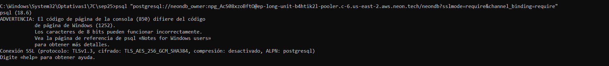
Figura 1. Conexión a la base de datos neondb mediante el cliente psql.
Después de establecer la conexión con la base de datos mediante el usuario propietario, se procedió a crear los tres usuarios solicitados para la práctica: pedro, juan y pablo. Cada uno de estos usuarios sería utilizado posteriormente para comprobar diferentes niveles de acceso a la información almacenada.
Para crear los usuarios se utilizó la instrucción CREATE USER. A cada usuario se le asignó una contraseña para permitir posteriormente su conexión individual mediante el cliente psql. Por seguridad, las contraseñas utilizadas durante la práctica se omiten en esta documentación.
CREATE USER pedro WITH PASSWORD '********';
CREATE USER juan WITH PASSWORD '********';
CREATE USER pablo WITH PASSWORD '********';
PostgreSQL confirmó la ejecución de las instrucciones mediante el mensaje CREATE ROLE. Posteriormente se utilizó el comando \du de psql para consultar los roles existentes y comprobar que los tres nuevos usuarios habían sido creados correctamente.
\du
En el resultado se observaron los usuarios pedro, juan y pablo, además del usuario propietario de la base de datos. Los usuarios recién creados no presentaron atributos administrativos especiales, ya que los permisos necesarios serían asignados posteriormente de manera individual.
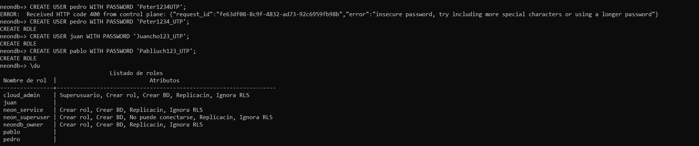
Figura 2. Creación de los usuarios pedro, juan y pablo y comprobación mediante el comando \du.
Una vez creados los usuarios, se comenzó con la asignación de privilegios. De acuerdo con los requerimientos de la práctica, el usuario pedro debía tener la capacidad de consultar la información almacenada en las tablas de la base de datos, sin contar con permisos para modificarla.
Primero se otorgó el privilegio USAGE sobre el esquema public. Este permiso permite al usuario acceder a los objetos contenidos dentro del esquema, siempre que también posea los privilegios correspondientes sobre dichos objetos.
GRANT USAGE ON SCHEMA public TO pedro;
Posteriormente se concedió el privilegio SELECT sobre todas las tablas existentes dentro del esquema public. Con este permiso, Pedro puede realizar consultas para visualizar la información, pero no recibe permisos de inserción, actualización o eliminación.
GRANT SELECT ON ALL TABLES IN SCHEMA public TO pedro;
Después de ejecutar ambas instrucciones, PostgreSQL mostró el mensaje GRANT, indicando que los privilegios fueron asignados correctamente. De esta forma, el usuario Pedro quedó configurado con acceso de lectura sobre las tablas de la base de datos.
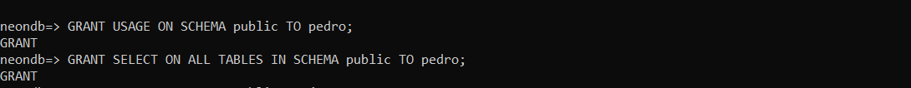
Figura 3. Asignación de los privilegios USAGE y SELECT al usuario pedro.
El siguiente usuario configurado fue juan. De acuerdo con los requerimientos de la práctica, este usuario debía contar con permisos de escritura específicamente sobre la tabla alumno, sin otorgarle los mismos privilegios sobre las demás tablas de la base de datos.
Primero se concedió el privilegio USAGE sobre el esquema public, permitiendo que el usuario pudiera acceder a los objetos del esquema para los cuales tuviera permisos asignados.
GRANT USAGE ON SCHEMA public TO juan;
Posteriormente se otorgaron los privilegios INSERT, UPDATE y DELETE sobre la tabla alumno. Estos permisos permiten agregar nuevos registros, modificar información existente y eliminar registros de dicha tabla.
GRANT INSERT, UPDATE, DELETE ON TABLE alumno TO juan;
También se concedieron los permisos USAGE y SELECT sobre las secuencias del esquema public. Esto permite utilizar las secuencias necesarias cuando una operación de inserción requiere generar automáticamente un identificador.
GRANT USAGE, SELECT ON ALL SEQUENCES IN SCHEMA public TO juan;
Después de ejecutar las instrucciones, PostgreSQL respondió con el mensaje GRANT, confirmando que los privilegios fueron asignados. De esta manera, Juan quedó configurado con permisos de escritura sobre la tabla alumno y con acceso a las secuencias necesarias para realizar inserciones.
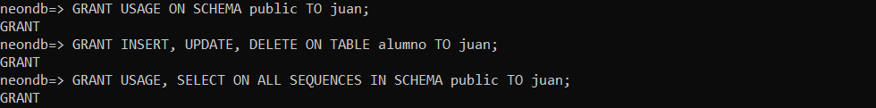
Figura 4. Asignación de privilegios de escritura sobre la tabla alumno al usuario juan.
Posteriormente se configuraron los privilegios correspondientes al usuario pablo. De acuerdo con los requerimientos de la práctica, este usuario debía tener permisos de escritura específicamente sobre la tabla asistencia, manteniendo restringido el acceso de escritura sobre las demás tablas de la base de datos.
En primer lugar, se concedió el privilegio USAGE sobre el esquema public. Este permiso permite que el usuario pueda acceder a los objetos del esquema para los cuales se le hayan otorgado privilegios específicos.
GRANT USAGE ON SCHEMA public TO pablo;
Después se otorgaron los privilegios INSERT, UPDATE y DELETE sobre la tabla asistencia. Con estos permisos, Pablo puede realizar operaciones de escritura sobre los registros correspondientes a las asistencias.
GRANT INSERT, UPDATE, DELETE ON TABLE asistencia TO pablo;
También se concedieron los privilegios USAGE y SELECT sobre las secuencias existentes en el esquema public. Estos permisos permiten utilizar las secuencias requeridas para la generación automática de identificadores durante determinadas operaciones de inserción.
GRANT USAGE, SELECT ON ALL SEQUENCES IN SCHEMA public TO pablo;
PostgreSQL confirmó cada una de las instrucciones mediante el mensaje GRANT. Con esta configuración, Pablo quedó limitado a realizar las operaciones de escritura asignadas sobre la tabla asistencia, de acuerdo con los requerimientos establecidos para la práctica.
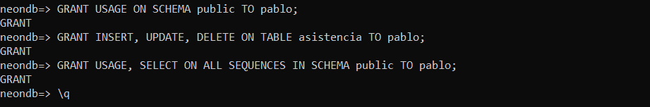
Figura 5. Asignación de privilegios de escritura sobre la tabla asistencia al usuario pablo.
Después de configurar los privilegios de los tres usuarios, se realizaron conexiones individuales para comprobar que los permisos funcionaran correctamente. Primero se cerró la sesión del usuario propietario y se inició una nueva conexión utilizando las credenciales del usuario pedro.
psql -h TU_HOST_DE_NEON -U pedro -d neondb -W
Una vez establecida la conexión, se utilizó la siguiente consulta para verificar que la sesión correspondiera al usuario Pedro.
SELECT current_user;
Posteriormente se realizaron consultas sobre las tablas alumno y materia. Ambas operaciones pudieron ejecutarse correctamente debido al privilegio SELECT que había sido otorgado previamente.
SELECT * FROM alumno;
SELECT * FROM materia;
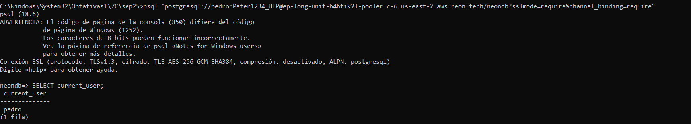
Figura 6. Comprobación del acceso de lectura del usuario pedro mediante consultas sobre las tablas de la base de datos.
Para comprobar que Pedro únicamente contaba con permisos de lectura, se intentó insertar un nuevo registro en la tabla materia.
INSERT INTO materia (nombre)
VALUES ('PRUEBA PEDRO');
PostgreSQL rechazó la operación y mostró un mensaje indicando que el usuario no tenía permisos sobre la tabla materia. Este resultado confirmó que Pedro podía consultar la información, pero no tenía autorización para insertar nuevos registros.
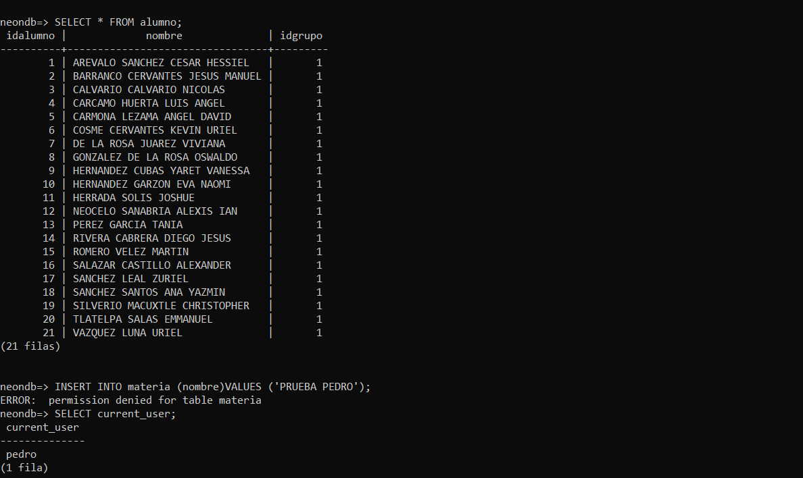
Figura 7. Intento de inserción rechazado debido a que el usuario pedro no cuenta con privilegios de escritura sobre la tabla materia.
Después de comprobar los privilegios de Pedro, se cerró su sesión y se realizó una nueva conexión a la base de datos utilizando las credenciales del usuario juan. El propósito de esta prueba fue verificar que pudiera realizar operaciones de escritura sobre la tabla alumno, de acuerdo con los permisos asignados anteriormente.
psql -h TU_HOST_DE_NEON -U juan -d neondb -W
Una vez iniciada la sesión, se verificó el usuario conectado mediante la función current_user.
SELECT current_user;
Para comprobar el permiso de escritura, se realizó una inserción de prueba en la tabla alumno. La operación fue aceptada por PostgreSQL debido a que Juan contaba con el privilegio INSERT sobre esta tabla.
INSERT INTO alumno (nombre, idGrupo)
VALUES ('ALUMNO PRUEBA JUAN', 1);
PostgreSQL mostró el mensaje INSERT 0 1, indicando que el registro de prueba fue insertado correctamente. Con este resultado se comprobó que el permiso de escritura asignado a Juan sobre la tabla alumno funcionaba correctamente.
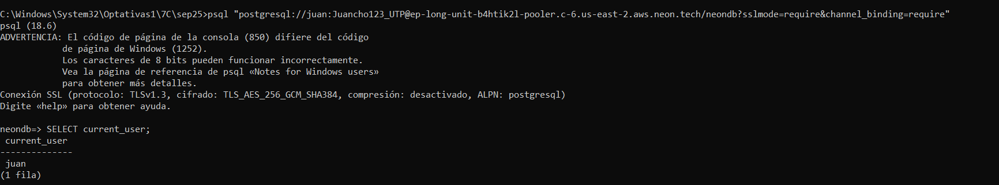
Figura 8. Inserción permitida al usuario juan sobre la tabla alumno.
Posteriormente se intentó realizar una operación de inserción sobre la tabla materia. Debido a que Juan no recibió privilegios de escritura sobre esta tabla, PostgreSQL rechazó la operación.
INSERT INTO materia (nombre)
VALUES ('PRUEBA JUAN');
El mensaje de permiso denegado permitió comprobar que los privilegios de Juan se encontraban restringidos a los objetos autorizados y que no podía realizar la misma operación sobre una tabla para la cual no se le habían concedido permisos.
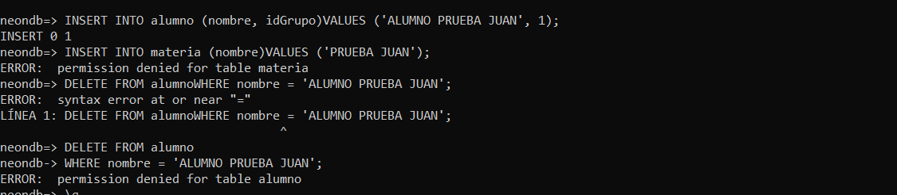
Figura 9. Operación de inserción rechazada al usuario juan sobre la tabla materia por falta de privilegios.
Después de finalizar las pruebas correspondientes al usuario Juan, se cerró su sesión y se realizó una nueva conexión a la base de datos utilizando las credenciales del usuario pablo. El objetivo fue comprobar que los permisos de escritura asignados sobre la tabla asistencia funcionaran correctamente.
psql -h TU_HOST_DE_NEON -U pablo -d neondb -W
Una vez establecida la conexión, se verificó que la sesión correspondiera al usuario Pablo mediante la función current_user.
SELECT current_user;
Para comprobar el permiso de escritura se realizó una inserción de prueba en la tabla asistencia. Se utilizaron datos temporales con la finalidad de verificar el funcionamiento del privilegio INSERT asignado previamente.
INSERT INTO asistencia (idAlumno, fecha, horas)
VALUES (1, '2026-09-25', 2);
La operación fue aceptada por PostgreSQL, mostrando el mensaje INSERT 0 1. Este resultado confirmó que Pablo podía realizar operaciones de escritura sobre la tabla asistencia de acuerdo con los privilegios que le fueron asignados.
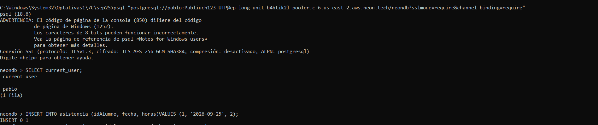
Figura 10. Inserción permitida al usuario pablo sobre la tabla asistencia.
Posteriormente se realizó una segunda prueba intentando insertar información en la tabla alumno. Esta tabla no formaba parte de los objetos sobre los cuales Pablo tenía privilegios de escritura.
INSERT INTO alumno (nombre, idGrupo)
VALUES ('ALUMNO PRUEBA PABLO', 1);
PostgreSQL rechazó la operación debido a la falta de privilegios sobre la tabla alumno. Con esta prueba se confirmó que los permisos asignados a Pablo se encontraban limitados a la tabla asistencia y que no podía realizar operaciones de escritura sobre tablas no autorizadas.
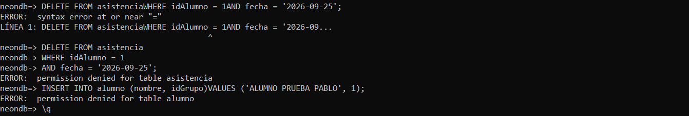
Figura 11. Operación de inserción rechazada al usuario pablo sobre la tabla alumno por falta de privilegios.
Después de realizar las pruebas individuales con Pedro, Juan y Pablo, se volvió a iniciar sesión con el usuario propietario de la base de datos. Finalmente, se verificó la configuración de los usuarios y los privilegios que habían sido asignados durante la práctica.
Primero se utilizó el comando \du para consultar los roles existentes en PostgreSQL y comprobar que los usuarios pedro, juan y pablo continuaban registrados correctamente.
\du
Posteriormente se utilizó el comando \dp, el cual permitió consultar los privilegios de acceso existentes sobre las tablas y secuencias de la base de datos.
\dp
En el resultado se comprobó que el usuario pedro tenía el privilegio r, correspondiente a lectura mediante SELECT, sobre las tablas de la base de datos. También se observó que juan tenía los privilegios a, w y d sobre la tabla alumno, correspondientes a INSERT, UPDATE y DELETE.
De la misma manera, el usuario pablo presentó los privilegios a, w y d sobre la tabla asistencia. Además, Juan y Pablo mostraron los permisos correspondientes sobre las secuencias necesarias para las operaciones de inserción.
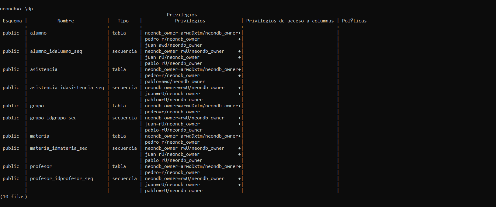
Figura 12. Verificación final de los privilegios asignados a pedro, juan y pablo mediante el comando \dp.
Con esta comprobación final se verificó que cada usuario mantuviera únicamente los privilegios establecidos para la práctica. Las pruebas realizadas anteriormente también demostraron que PostgreSQL permitía las operaciones autorizadas y rechazaba aquellas para las cuales el usuario no contaba con los permisos correspondientes.
Resultados y conocimientos obtenidos
Mediante el desarrollo de esta práctica fue posible comprender de manera práctica cómo se administran usuarios y privilegios dentro de una base de datos PostgreSQL alojada en Neon. La creación de diferentes usuarios permitió observar cómo es posible establecer distintos niveles de acceso dependiendo de las actividades que cada persona necesita realizar dentro de una base de datos.
Durante la práctica se crearon los usuarios pedro, juan y pablo. A Pedro se le asignaron permisos de lectura sobre las tablas, mientras que Juan recibió permisos de escritura sobre la tabla alumno y Pablo sobre la tabla asistencia. Esto permitió comprobar que los privilegios pueden asignarse de manera específica sin proporcionar acceso completo a todos los usuarios.
Las pruebas realizadas con cada cuenta fueron importantes para verificar el funcionamiento de la configuración. Las operaciones autorizadas pudieron ejecutarse correctamente, mientras que PostgreSQL rechazó aquellas que intentaban acceder a funciones para las cuales el usuario no tenía los privilegios necesarios. De esta forma, se comprobó que la asignación de permisos se aplicó de acuerdo con los requerimientos establecidos.
Finalmente, esta práctica permitió reforzar conocimientos sobre la creación de usuarios, el uso de privilegios como SELECT, INSERT, UPDATE, DELETE y USAGE, así como el manejo de esquemas y secuencias. Estos mecanismos son importantes para mantener un mejor control de acceso a la información y limitar las acciones que cada usuario puede realizar dentro de un sistema de base de datos.
Fuentes consultadas para el desarrollo de la práctica
PostgreSQL Global Development Group. (2026). Database roles. PostgreSQL Documentation. https://www.postgresql.org/docs/18/database-roles.html
PostgreSQL Global Development Group. (2026). Privileges. PostgreSQL Documentation. https://www.postgresql.org/docs/18/ddl-priv.html
PostgreSQL Global Development Group. (2026). GRANT. PostgreSQL Documentation. https://www.postgresql.org/docs/18/sql-grant.html
PostgreSQL Global Development Group. (2026). Schemas. PostgreSQL Documentation. https://www.postgresql.org/docs/18/ddl-schemas.html
Neon. (2026). Connect from any application. Neon Docs. https://neon.com/docs/connect/connect-from-any-app